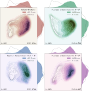

Comparing Point Cloud Strategies for Collider Event Classification. (with Peter Onyisi and Jesse Thaler)
Abstract:
In this paper, we compare several event classification architectures defined on the point cloud representation of collider events. These approaches, which are based on the frameworks of deep sets and edge convolutions, circumvent many of the difficulties associated with traditional feature engineering. To benchmark our architectures against more traditional event classification strategies, we perform a case study involving Higgs boson decays to tau leptons. We find a 2.5 times increase in performance compared to a baseline ATLAS analysis with engineered features. Our point cloud architectures can be viewed as simplified versions of graph neural networks, where each particle in the event corresponds to a graph node. In our case study, we find the best balance of performance and computational cost for simple pairwise architectures, which are based on learned edge features.

(hover over to zoom)